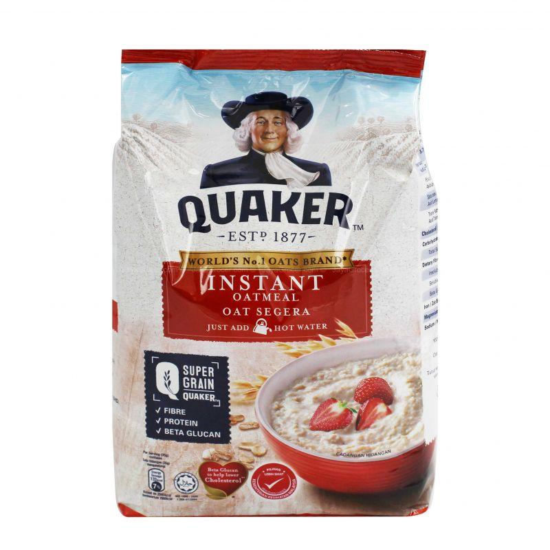
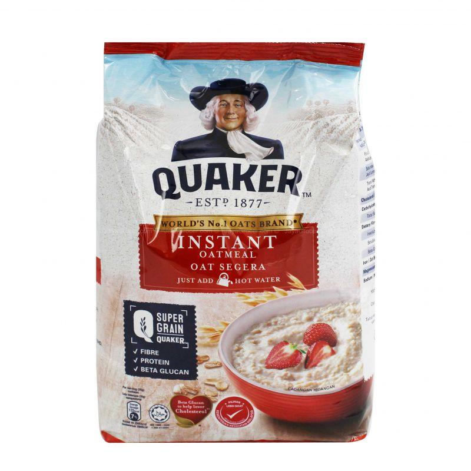

🥗CARA PEMAKANAN YANG BETUL UNTUK WANITA MENGANDUNG🍽️


Tempoh kehamilan merupakan saat yang amat penting bagi setiap ibu yang sedang mengandung. Atas sebab itu ibu harus mengamalkan makanan awal kehamilan yang sihat supaya perkembangan ibu dan bayi berada dalam keadaan yang terbaik.Pemakanan yang diambil semasa mengandung bukan menyalurkan nutrisi kepada bayi dalam kandungan sahaja, tetapi turut memberikan tenaga dan nutrien kepada ibu.Jadi apakah jenis makanan yang sesuai diamalkan dalam diet pemakanan ibu semasa tempoh awal kehamilan?
1)PRODUK TENUSU🥛

Ketika hamil, ibu perlu mengambil lebih protein dan kalsium untuk memenuhi keperluan tumbesaran fetus.Produk tenusu merupakan sumber makanan terbaik semasa kehamilan yang mengandungi kalsium dan membekalkan khasiat yang tinggi iaitu fosforus, pelbagai jenis vitamin B, magnesium dan zink.Yogurt antara produk tenusu yang memberikan banyak manfaat dan mengandungi lebih banyak kalsium berbanding produk tenusu yang lain. Sesetengah yogurt turut mengandungi beberapa jenis bakteria probiotik, yang menyokong kesihatan sistem pencernaan.
2)TELUR🥚
Telur merupakan sumber terbaik bagi protein, ia adalah bahagian penting dalam diet pemakanan ketika hamil. Asid amino yang menghasilkan protein merupakan blok bangunan sel dalam badan anda dan bayi.Telur turut mengandungi banyak vitamin dan mineral, termasuklah kolin (choline) yang berfungsi membantu perkembangan otak dan saraf tulang belakang bayi. Bahkan, ia juga dapat mencegah kecacatan tiub neural yang menyebabkan keabnormalan pada otak dan tulang belakang bayi.
3)UBI KELEDEK🍠
Kaya dengan beta-kerotin iaitu sebatian yang akan bertukar kepada vitamin A di dalam badan. Vitamin A penting untuk pertumbuhan bagi kebanyakan sel dan tisu sihat. Ubi keledek juga mengandungi serat yang membuatkan perut lebih kenyang, mengurangkan kenaikan gula dalam darah dan mempertingkatkan kesihatan sistem pencernaan.
4)OAT
 

Makanan yang kaya dengan serat, vitamin B, zat besi dan pelbagai mineral.Bersama dengan karbohidrat kompleks lain, serat yang terkandung di dalam oat dapat membantu mencegah masalah sembelit.Kandungan serat pada oatmeal juga dapat membantu menjaga berat badan ibu selama hamil agar tidak naik berlebihan. Hal tersebut sangatlah penting, mengingat ada begitu banyak risiko kehamilan akibat berat badan berlebihan.
5)BROKOLI🥦 & SAYURAN BERDAUN HIJAU🥬
Selain mengandungi nutrien penting untuk kesihatan ketika hamil, brokoli dan sayuran berdaun hijau, seperti bayam turut kaya dengan serat, pelbagai jenis vitamin, zat besi, kalium dan antioksidan yang membantu mencegah penyakit.Sayuran hijau ini dapat membantu badan anda menyerap zat besi daripada makanan yang dimakan. Serat yang tinggi dapat mencegah sembelit yang merupakan masalah utama wanita hamil.
6)IKAN TONGKOL🐟
Ikan tongkol mengandungi nutrien penting sperti asid lemak omega-3 (DHA dan EPA), protein, vitamin dan mineral seperti zat besi. Kandungan DHA berperanan dalam mencegah keguguran bagi wanita hamil dan EPA berfungsi untuk membantuk sel darah dan menyihatkan jantung. Selain itu, berbagai vitamin seperti vitamin A, vitamin B1, vitamin B2, niacin, dan beta karoten juga ditemukan dalam ikan tongkol. Berbagai nutrisi inilah yang membuat manfaat ikan tongkol untuk ibu hamil sangat pelbagai.
7)DAGING MERAH🥩
Daging lembu dan ayam adalah sumber terbaik untuk kandungan protein berkualiti tinggi. Daging lembu kaya dengan zat besi, kolin dan vitamin B iaitu nutrisi yang diperlukan dalam jumlah yang tinggi ketika tempoh kehamilan.Zat besi adalah mineral penting yang digunakan oleh sel darah merah sebagai hemoglobin. Di mana ia penting untuk pengedaran oksigen kepada sel di seluruh badan.
MASAKAN UNTUK IBU MENGANDUNG
Bagi ibu-ibu yang hamil, pastinya anda memerlukan sajian yang penuh khasiat serta kaya nutrisi bagi memastikan kesihatan diri dan juga bayi berada di tahap yang optimum. Oleh itu khas buat anda, RASA kongsikan 10 resipi yang boleh dicuba bagi mempelbagaikan menu di sepanjang tempoh kehamilan!!.PAUTAN LINK UTNUK MAKLUMAT LEBIH LANJUT.Kat link ni korang boleh tengok bahan masakan dan cara memasak hidangan yang korang nak!! https://www.rasa.my/koleksi-resipi-hidangan-berkhasiat-bernutrisi-yang-sesuai-untuk-ibu-hamil/

Hidangan Masakan Untuk Ibu Mengandung. Harap Korang Dapat Cuba Dan Nikmati Masakan Di atas 😊 !!